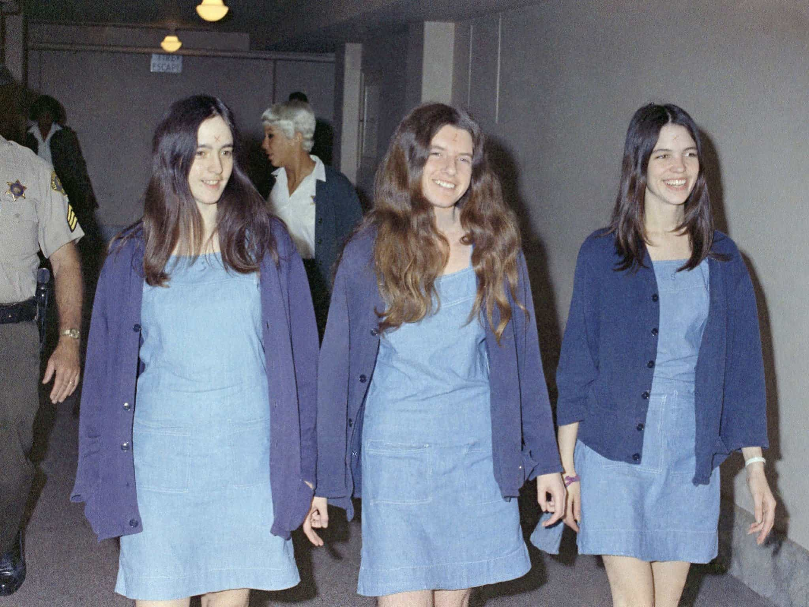

< < < Back
Every Violent Male Criminal Is Rewarded With Sex From Beautiful Women – Return Of Kings
Feminists, especially in relation to rape hysteria, like to cling to figures showing that a majority of serious crimes are committed by men. What is left untouched (and you can guess why) is how large numbers of women reward hardened and violent male criminals with attention, short-term sex, and long-term relationships. No commensurate trend of men mass glamorizing convicted female murderers, rapists, and armed robbers has ever been observed.
Aside from their aggressiveness and penchant for confronting rivals, the one thing you always notice about the mafia, outlaw biker groups, and black gangstas is that they are never short of women, very frequently aesthetically pleasing ones. This continues whenever they are incarcerated.
In the conversations I have had with off-duty police officers and prison guards, the one constant characteristic they bring up about the criminals they have to apprehend or keep an eye on is the jealousy-inducing number of women they are often involved with.
This reality contradicts the feminist implication (read: lie) that only isolated and rejected individuals, like Elliot Rodger and Ben Moynihan, commit violent acts because of women.

A widespread female preference for violent and criminally-minded men isn’t just applicable to killers with a cult following, like Charlie Manson.
With conjugal rooms the norm in many prisons nowadays, third-party witnesses note a steady stream of very fertile, beautiful women visiting men convicted of horrendous acts. Of course, some of these men still claim innocence and convince the women of their purported purity, but most are incontrovertibly guilty or happily admit their responsibility. It matters little; the women still come. And when they do come, many will risk their own future personal freedom to smuggle in items or directly aid further criminal enterprises.
Do all women in society even come close to showering these men with praise, affection, and spread legs? Of course not. But given that only a minority of men perform the sorts of acts required to be serious criminals, only a small proportion of women are needed for this system of predictable and large rewards to perpetuate itself.
And the number of women either rewarding or very willing to reward these men is larger than the number of violent men in or out of jail.
A microcosm of a significantly wider trend

The standard, false narrative is that ROK readers contribute more to the condoning male violence than a woman like Caitlin Hall, who immediately began dating Michael Ibrahim following his release from prison for killing another man.
The cover image of this article features Michael Ibrahim, who was convicted of the very gruesome stabbing death of Robin Nassour, the brother of a well-known Australian comedian. Pictured with him is the girlfriend he landed right after being released from prison. Though one of his older brothers is a very wealthy and connected nightclub owner in Sydney, there is no doubt that Ibrahim’s serious criminal past would appeal to many good-looking women.
Men seeing or reading about people like Michael Ibrahim (and there are many, many stories like his) recognize the good probability of attracting more than decent women (appearance-wise) if they, too, are convicted of serious crimes. You may wish to attribute greater weight to Ibrahim’s family’s money or, in other cases, to the physicality of a male criminal than his actual crimes. Be my guest. All that achieves, at best, is demonstrating that women are able to overlook a man’s very violent criminal past for financial and/or power considerations.
Regardless of how you look at this issue, a female’s erstwhile morals (if they even existed) go out the window when she shacks up with a violent criminal. The condoning of serious male violence by many women remains, however harshly you judge an attractive woman’s reasons for doing it.
As a male, how am I responsible for other men’s crimes?
This average Western male is attributed more blame for violent male criminals he doesn’t even know than the women who decide to fuck them. Makes perfect sense.
A predictable trope employed by feminists, SJWs and white knights is the bogus theory of collective male responsibility. Everyone from the male philosophy student to the good-natured male garbage collector is somehow causing, abetting, and condoning broader male crime simply by possessing a penis. The classic conception of this collective guilt is the invented rape culture, but it extends much more broadly than that.
Like many of you, I have never knowingly met a convicted murderer, rapist, or armed robber. Yet I am apparently a contributing factor to the next male-on-female sexual assault that happens 2,000 kilometres away in Tasmania, or some guy allegedly punching his girlfriend in Lübeck, Germany at three o’clock in the morning.
Ironically, we are blamed for these incidents and women who actually know these men and can exert a real influence, from the mother who raised them to the sisters who lived alongside them, are cleared of any moral involvement. Female friends and acquaintances who continue social interactions with men they know are violent or convicted criminals also get a free pass.
The conundrum only gets worse when we start to consider females who give out sex and intimate companionship to these men. A guy, perhaps a member of a biker gang, beats another man to death and is released after some years, only to find a couple models falling in his lap. How doesn’t this make some men more willing to commit violent acts?
If all women categorically refused to sleep with violent criminals, male crime would drop by 80-90% overnight
Women like Claudia Ochoa Felix have openly associated themselves with the criminal underworld, rewarding the choices of the men who act within it.
If this were to take place, some men, a small minority, would resort to rape to get some action. By contrast, the great majority of male criminals or criminally-inclined men would have no choice but to reform themselves and ameliorate their rougher tendencies. They would have to act more like the average male accountant or office worker, who is presently on a much, much lower rung of sexual appeal for a considerable cross-section of attractive women.
From the preceding discussion we can see that women are equally as, if not more, responsible for male crime than other men. The numbers of women who lavish or are willing to lavish violent men with access to their genitals far outstrip the rate of men committing repulsive crimes.
Yet this is probably the most inconvenient truth of all for feminists, so don’t expect them to even half-heartedly try to refute it any time soon. For them it’s always best ignored.
Read More: Men Benefit From Acting Potentially Violent And Explosive Around Women